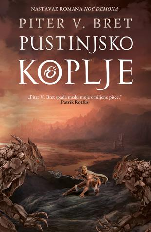

.jpg)

„Nema ničeg boljeg od dobre nove ideje, a ova knjiga zasnovana je baš na tome.“
Fantasy Book Review
Ljudska vrsta prepustila je noć utrobnicima, demonima koji se svakog dana u sumrak izdižu iz zemlje i razaraju
kako im drago sve do zore, kada ih sunce goni natrag u Utrobu. Dok se smrkava, malobrojni preživeli ljudi na
svetu skrivaju se iza magijskih simbola i mole se da ih čini zaštite još jednu noć. Godine odmiču, a razdaljina
između svakog seoceta i onog susednog izgleda sve veća i veća. Čini se da ništa ne može nauditi utrobnicima,
niti ponovo ujediniti čovečanstvo.
U usamljenim seocima rađa se troje dece. Jedan glasnik uči mladog Arlena kako je strah, više nego utrobnici,
osakatio čovečanstvo. Obična laž uništava Lišin savršeni život i ona završava sakupljajući bilje za staricu
strašniju od demona u noći. Rodžerov život zauvek se menja kada u njegovu varoš dođe žongler i zasvira violinu.
Ipak, ovo troje dece imaju nešto zajedničko. Svi su tvrdoglavi i znaju da svet sadrži nešto više od onoga što im
svi govore – samo ako se usude da napuste bezbednost zaštitnih čini i daju se u potragu.
Knjigu možete poručiti na sajtu knjižare Laguna.